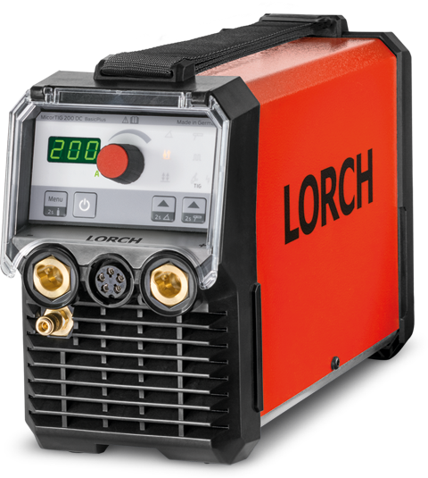

MicorTig
Мобильная мощность
без ограничений и компромиссов

Lorch выводит сварку TIG на новый уровень, благодаря первому в своем роде высокочастотному поджигу TIG от аккумуляторной батареи.
Мобильная мощность
без ограничений и компромиссов
Lorch выводит сварку TIG на новый уровень, благодаря первому в своем роде высокочастотному поджигу TIG от аккумуляторной батареи.
Позволяет подключать устройство к стандартной однофазной сети электропитания на 115-230 В, генератору или аккумуляторной батарее MobilePower от Lorch.
Эта универсальность оказывается особенно полезной при работе в удаленных местах, поскольку устраняет необходимость в поиске сетевого подключения.
Бесконтактный высокочастотный поджиг
Поджиг TIG осуществляется бесконтактно высокочастотными импульсами нажатием на клавишу,
поэтому вольфрамовый электрод не прикасается к заготовке. Таким образом, в шов не попадают вольфрамовые включения, а электрод избегает вредных воздействий.
ContacTIG
Кроме того, для эксплуатации на участках или с инструментами повышенной высокочастотной чувствительности поджиг можно переключать на ContacTIG (контактный поджиг).
Степан Будич, директор компании F-Town Streetmachines
Интуитивное управление аппаратом благодаря чётко структурированному пользовательскому интерфейсу.
Встроенная импульсная функция до 5 кГц особенно подходит для обработки малых толщин.
Благодаря опции в виде горелки Powermaster все важные сварочные параметры всегда будут у Вас под рукой и под контроле.
Благодаря специальной защите аппарат продолжает работать даже после падения с высоты 80 см.
Благодаря IP23 и знаку S оптимально подходит для монтажных работ.
Благодаря самой современной силовой электронике и функции режима ожидания аппарат MicorTIG имеет высокий КПД и незначительное энергопотребление.